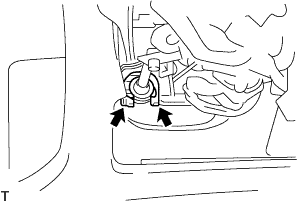

Column Shift Transmission Control Cable ASSY installation |
| 1. Column Shift Transmission Control Cable ASSY installation |
From the engine side through the control cable and attach the bracket with a nut.
In the clip, attach the control cable to the control cable bracket.
With a nut, connect the control cable to the transxle.
|  |
Attach a new clip to the cable bracket and attach the control cable to the column ASSY.
Put the shift lever in the N range and press to the P range side, pull the control cable end part, and attach the control cable to the Velcank with a nut with the backlash eliminated.
| 2. Transmission control cable cover installation |
Attach the transmission control cable cover.
| 3. Transmission control cable support installation |
At the nut, attach a transmission control cable support.
| 4. Shift lever position inspection |
The shift lever shifts from N range to each range.At this time, the shift lever can be operated smoothly, moves moderately in each range, and confirms that the position indicator is displayed and the shift lever is matched.
Make sure that you can shift to each range of P, R, and L only when the shift lever is pulled to the front.
Start the engine and shift to the D range. The vehicle progresses forward, and when the R range is shifted, a buzzer sounds and the vehicle retreats.
| 5. Shift lever position adjustment |
Remove the nut of the control shaft lever and separate the control cable.
Turn the control shaft lever until it stops in the counterclockwise direction, and then return to the position (N range) in two steps.
 |
As shown in the figure, the shift lever is shifted to the N range, pressed against the R range side, attach the control cable and tighten with a nut.
After adjustment, check the operation condition and operation.
| 6. Steering column cover installation |
 |
Attach the steering column cover with three screws.
| 7. Installation panel finish panel LWR installation |
 |
Connect each connector and a food optic, combine the five claws and clip <a> 2 pieces.
| 8. Installation panel finish panel LWR CTR installation |
 |
Attach the instrument cup holder with three screws.
Connect the connector of the power outlet socket.
Combine the eight claws and attach the instrument panel finish panel LWR CTR with two clips <c>.